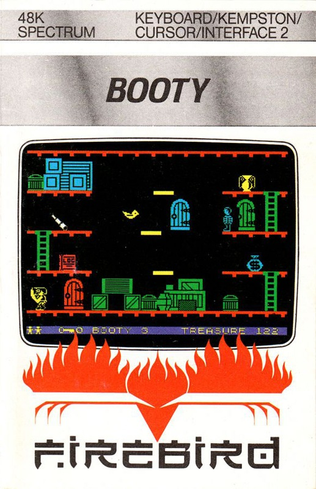
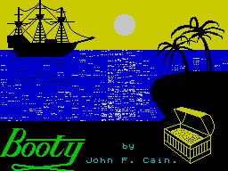
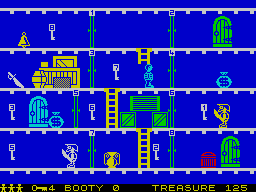
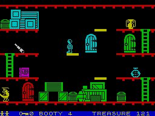

Booty


{kind=link}

| Publisher: | Firebird |
| Price: | £2.50 |
| Year: | 1984 |
| Source: | CRASH, Issue 10 |

From its excellent, animated title screen, you can see at once that this is a salty sea-dog of a game in which you play Jim (me lad) the cabin boy on a hazardous quest to collect all the booty strewn around the decks of an old galleon.

This is the first game from a very new company, but hardly an unknown one, for Firebird is the trade name for British Telecom (Firebird being the evil alter ego of that much loved feathered fellow Busby).
There are 20 holds in the ship (screens) with eight rooms making up each hold. All the doors are numbered and require the appropriately numbered key to be collected before going through the door. These keys are dotted about in different rooms, so it requires some nifty thinking to work your way round. Additionally there are doors which lead out of the screen here and there into other screens.

Each screen is arranged as a platform game (there’s a logic here — each level being a deck of the galleon of course) with the platforms connected either by ladders or by lifts. Some deck floors on certain screens tend to vanish now and again, and on some the combinations of lifts are very complicated. Cabin Boy Jim’s life is not made any easier by the prowling activities of the ghost pirates who march up and down within a room, cutlasses drawn. There’s also the occasional rat and the Captain’s berserk parrot that signal instant death. Collecting booty is done simply by touching it, but beware some items are booby trapped and explode a second after contact, so Jim must get out of the way fast!
CRITICISM
‘I’m always wary of cheap games but interested, with this one being British Telecom’s first (arcade) game. To say the least, I was astounded by the superb, very solid graphics. The idea of a ship’s interior is quite a novel one. Collecting booty at first seemed quite trivial but this is made considerably more difficult by needing the right key to open the correct room to be able to even get at the treasure. On some screens you need to wander all over the screen to get at the doors, and this can take ages to say the least. Each screen is inter-connected very nicely, each one needing a different type of skill. I especially like the way the lifts on some screens have been used, for example in one case there are five lifts all spaced next to each other, travelling in different directions at different speeds, which requires good timing skills to hop across to get a key, only to make you recross the lifts again several times — an excellent idea. Sound is continuous — a well known sea shanty tune, but if it drives you mad you can turn it off — I found I was able to pace myself by it. I’m amazed that Firebird are selling a well programmed game like this for a measly £2.50, when it could quite easily have sold for £5.95. This makes it tremendous value for money, and destroys the fallacy that cheapies are always nasties.’

‘The first impression of Booty is its lovely title page, second is a rather flat looking platform game, although the graphics are lively, animated and well designed. On beginning to play the game, this impression of okay-ness doesn’t fade, as it’s reasonable fun, just a matter of getting the right key to the right door and collecting the treasures. A few minutes later and this secondary impression is beginning to evaporate rapidly as the rich complexities of the game sink in. Not so simple after all, then. Not damned likely! All the screens are inter-linked and you cannot really just clear one and move to another — well you can sometimes, but the ghosts often make this impossible. Some of the screens which incorporate lifts, horizontal moving platforms, collapsing floors and lift stop floors which vanish after a second or two, start to give you the nightmare feeling that you may have been here before — is this galleon the true insides of the Yacht moored at the end of Jet Set Willy’s Mansion? The content of the game reveals itself coyly minute after minute, with lively and ever-changing graphics. In fact Booty is marvellous entertainment, a challenging game and very addictive. It’s also at a budget price. Incredible value. Get it!’
‘The graphics in Booty are colourful, well detailed, well animated, smooth and look real — a feature which many games don’t boast these days. The pirates look real mean with their cutlasses and beards as they bouncily walk along the ship’s decks. I think this game will appeal to people who enjoy exploring games such as Jet Set Willy. There is the thrill of going through a door to see what comes next — often it’s a meanly positioned pirate and you’re only a step away from death — can you get to the button in time? The various screens have all been well designed to offer a different set of tactical problems — and it’s nice to note that each one is remembered by the program, i.e. if you leave a screen and then re-enter it later, the pirates will be in exactly the position they were when you left it before. There’s no doubt about it, Booty is a highly playable and addictive game, loads of fun and well worth its asking price.’
COMMENTS
| Control keys: | User-definable, four direction and a fire (going through back doors) needed |
| Joystick: | Almost any via UDK |
| Keyboard play: | Suit yourself for positions, very responsive and capable of finely tuned movement |
| Use of colour: | Excellent, varied |
| Graphics: | Nice and solid, generally very good |
| Sound: | Continuous tune with on/off facility, plus some effects |
| Skill levels: | 1 |
| Lives: | 3 |
| General rating: | The first budget game to get an unreserved appreciation from CRASH reviewers, playable, addictive and excellent value for money. |
| Use of computer: | 92% |
| Graphics: | 90% |
| Playability: | 94% |
| Getting started: | 89% |
| Addictive qualities: | 95% |
| Value for money: | 99% |
| Overall: | 93% |